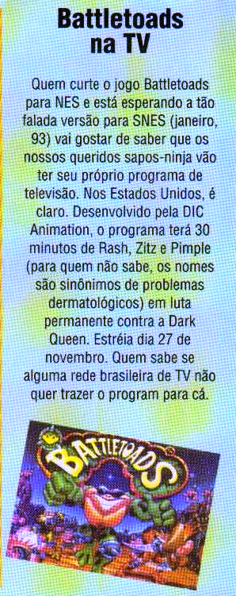

Batlettoads vai passar na TV!
 :::. Texto Gigacom!
:::. Texto Gigacom!
fonte: Gamepower 4
Essa fez muito moleque mostrar um sorriso banguela  Battletoads era um dos jogos mais adorados daquela época, apesar
da dificuldade insana do game (principalmente da famosa fase dos
jetskys...
Battletoads era um dos jogos mais adorados daquela época, apesar
da dificuldade insana do game (principalmente da famosa fase dos
jetskys...  ) que fez muita gente a frequentar psiquiatras (diga-se de passagem,
psicologo naqueles dias era conhecido como médico dos doidos,
então para um pai levar o filho para um profissional desses era
coisa extrema de ultimo caso!) o jogo era incrivelmente viciante! Todo
mundo conhecia o game, mesmo que nem sempre pelo nome, apenas pelo
apelido como "jogo dos sapos".
) que fez muita gente a frequentar psiquiatras (diga-se de passagem,
psicologo naqueles dias era conhecido como médico dos doidos,
então para um pai levar o filho para um profissional desses era
coisa extrema de ultimo caso!) o jogo era incrivelmente viciante! Todo
mundo conhecia o game, mesmo que nem sempre pelo nome, apenas pelo
apelido como "jogo dos sapos".
A noticia do desenho animou muita gente, e como sempre, entrou em calorosas discurssões na hora do recreio de muitas escolas, principalmente quando o assunto era: será que o desenho vai passar no show da Xuxa, ou no show da Mara Maravilha? Enfim...
Mas e aé Giga, saiu ou não saiu? Rapaz... não saiu  De acordo com as informações dos nossos detetives (tio Corredor X e Rebirfh, brigadu pelas informações miguxos
De acordo com as informações dos nossos detetives (tio Corredor X e Rebirfh, brigadu pelas informações miguxos ),
Battletoads teve um piloto exibido na TV americana em 92 e foi
publicado em fitas VHS mais tarde no inicio de 1994, porém
mais para dar uma força na franquia do que para virar um desenho
animado mesmo.
),
Battletoads teve um piloto exibido na TV americana em 92 e foi
publicado em fitas VHS mais tarde no inicio de 1994, porém
mais para dar uma força na franquia do que para virar um desenho
animado mesmo.
No piloto, dá pra ver que a historia é sobre três guris escolhidos por alguém, para se transformarem em super sapos batalhadores... eerrr... bem, fica meio porca a tradução... vamos lá de novo: se transformarem em Battletoads pelo professor T Bird, para resgatar uma princesa capturada pela Dark Queen. E como todo superheroi, tinham lá seus poderes, como transformar mãos e pés em armas para jogar longe os porcos inimigos (técnica essa chamada SMASH HITS!).
A tal empresa que fez o piloto era até bem conhecida no ramo, foi
ela quem deu vida ao Inspetor Bugiganga, e fez o desenho da
Carmen Sandiego. Aliás ela tambem
produziu um piloto de Zelda, outro do Sonic X-treme (sim, aquele que
foi cancelado  ),
uma série de desenhos mais clássico do Sonic, outra
série com desenhos do Mario e uma penca de pilotos de outros
personagens e jogos de video games! Porque raios então não seguiram em frente com Battletoads?
Talvez porque viram que não faria o sucesso esperado... Nas palavras do Corredor X, o piloto é ruim que dói
),
uma série de desenhos mais clássico do Sonic, outra
série com desenhos do Mario e uma penca de pilotos de outros
personagens e jogos de video games! Porque raios então não seguiram em frente com Battletoads?
Talvez porque viram que não faria o sucesso esperado... Nas palavras do Corredor X, o piloto é ruim que dói Eu diria
que o ápice desses sapos foi quando aterrisaram no NES, alçando fama como muitos outros jogos bons. Eles
tiveram um bom desempenho nos 16 bits, mas nada comparado ao que foi na
era anterior. De qualquer forma, foi isso, os sapos não vieram
pro show da Xuxa naquele ano, mas fomos felizes da mesma forma
assistindo Smurfs perto da hora do almoço.
Eu diria
que o ápice desses sapos foi quando aterrisaram no NES, alçando fama como muitos outros jogos bons. Eles
tiveram um bom desempenho nos 16 bits, mas nada comparado ao que foi na
era anterior. De qualquer forma, foi isso, os sapos não vieram
pro show da Xuxa naquele ano, mas fomos felizes da mesma forma
assistindo Smurfs perto da hora do almoço.
Acesse o Trombone e comente sobre essa matéria!